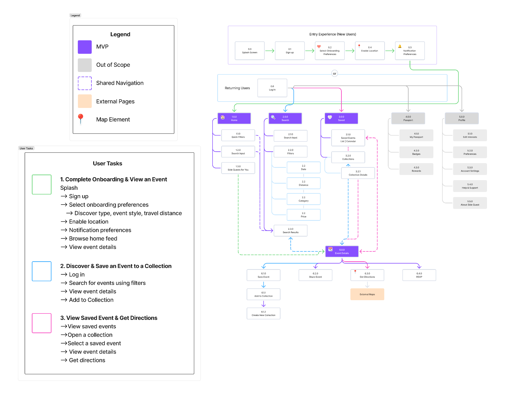
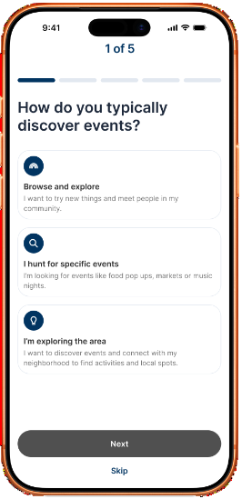
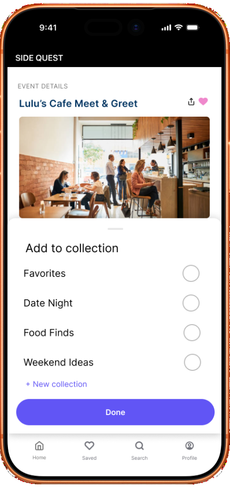
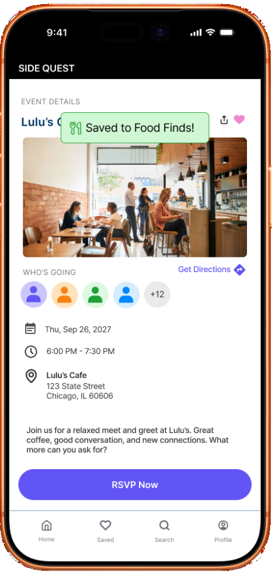
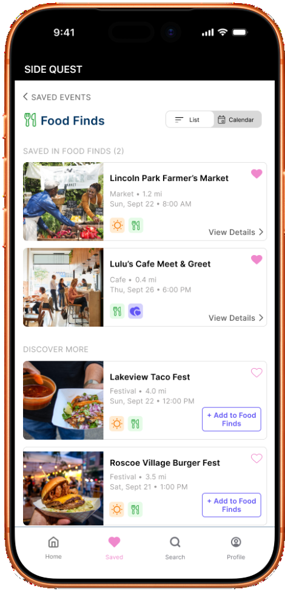
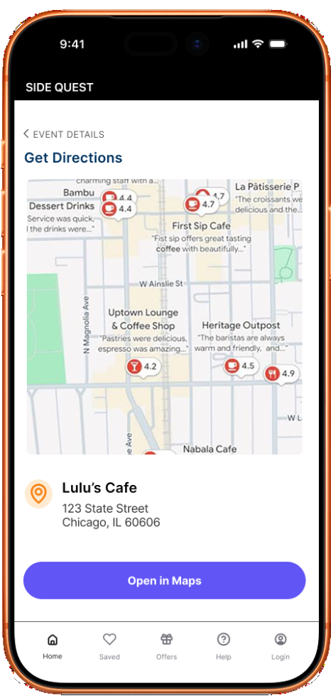

Quest 1
Centralize discovery
Users can find a local event without searching across social media, event platforms and websites.
Mobile app
Finding local events means digging through social media, event apps and word of mouth. Side Quest is a mobile concept that brings it all into one place, so discovering something fun nearby feels less like a chore and more like an adventure.

The problem
For busy adults juggling work, school, family and friends, finding something to do nearby means piecing together posts, websites and flyers. People who avoid social media miss out on events that only live there, and small vendors get lost in the algorithm.
Our competitive analysis of Eventbrite, Meetup, Partiful, social media and regional event sites confirmed the gap: each one shows only part of what is happening locally.
The challenge
How might we make local event discovery centralized and efficient, without losing the fun of stumbling onto something new?
Project goals
Quest 1
Users can find a local event without searching across social media, event platforms and websites.
Quest 2
Users narrow events by location, date, type and interests, and feel confident they know what is going on nearby.
Quest 3
Users understand key event details, save events they might attend and come back to them when they are ready.
Discovery research
We started with a literature review and competitive analysis, then ran remote, semi-structured interviews with adults who look for local things to do. I synthesized findings with the team in a FigJam affinity diagram.
"MeetUp is the place to look when I'm trying to get the vibe of the city."
What we learned
People found events through Instagram, TikTok, Eventbrite, Meetup, Partiful, venue accounts and friends. No single source had everything.
Participants cross-checked sources to confirm an event was real, and needed time, location, cost, duration and crowd size before deciding.
Without a good way to keep track of events, people relied on screenshots, memory and the algorithm resurfacing posts.
Recommendations were welcome, but participants worried strict filters would hide events they might love.
Process
Literature review, competitive analysis and 5 interviews.
Affinity diagram in FigJam, user stories and MVP scope.
Information architecture, user flows and low-fi wireframes.
Hi-fi Figma prototype and 5 moderated usability tests.

The solution
We scoped the MVP down to the journey our research pointed to: discover, evaluate, save, revisit.
A short onboarding asks how you like to find events, your event style and how far you'll travel. Then the Home feed shows events near you, while still leaving room to browse outside your usual picks.

Filter by date, distance, category and price. Event details put what people told us they need up front: date, time, location, description and who's going. Tap the heart to add it to a collection like Food Finds.


Saved events live in collections, so no more digging through screenshots. When you're ready, open the event and get directions in your favorite maps app.


Usability testing
Five participants completed three scenario tasks in moderated Zoom sessions, then rated each task with the After-Scenario Questionnaire (ASQ), from 1 (difficult) to 5 (easy).
Every participant rated onboarding a 4 or 5.
Reflection
We ran round 1 of testing and drafted recommendations for round 2. Here's what I'm taking with me.